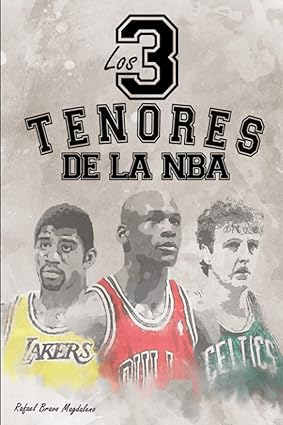
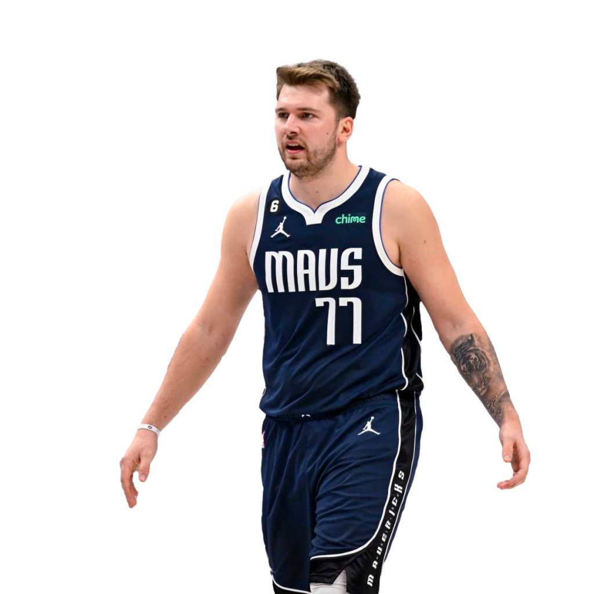

JUEGO EN LOS PRÓXIMOS MESES
Noticias
NBA Draft 2024: dónde y a qué hora ver el evento de dos noches NBA Draft 2024: dónde y a qué hora ver el evento de dos noches Aquí está todo lo que debes saber del Draft de la NBA de dos noches comenzando el miércoles a las 8 p.m. ET, incluyendo orden de selecciones, prospectos y cómo ver la transmisión por la familia de canales de ESPN.
El pívot de los Celtics, Kristaps Porzingis
Porzingis tendrá una cirugía y se perderá los Juegos Olímpicos El pívot de los Celtics, Kristaps Porzingis, será operado por una rara lesión en la pierna izquierda. No hay una línea de tiempo para su recuperación, pero no jugará con Letonia en los Juegos de París.

WNBA: Wilson y Clark lideran votación anticipada de Juego de Estrellas
USA TEAM PARIS 2024

LIBROS LOS TENORES DE LA NBA
El ex NBA Jontay Porter se declara culpable por un escándalo de apuestas
El exjugador de la NBA Jontay Porter se declaró este miércoles culpable en el juicio sobre un escándalo de apuestas deportivas, informaron medios estadounidenses. Tras reconocer su culpabilidad en un juzgado federal de Nueva York, Porter fue puesto en libertad bajo fianza de 250.000 dólares y su sentencia se dará a conocer el 18 de diciembre.
Kawhi Leonard se cae del Dream Team de Estados Unidos para los Juegos Olímpicos
El Dream Team de Estados Unidos se ha llevado el primer varapalo a falta de 16 días para que arranquen los Juegos Olímpicos, en los que parte como clarísimo favorito al oro. El motivo es que una de sus grandes estrellas, Kawhi Leonard, causará baja para la cita de París según adelanta Shams Charania, de The Athletic.
Paul George "Mi objetivo era retirarme en los Clippers y ganar un anillo"
Paul George, nuevo jugador de los Philadelphia 76ers, repasó en el 'Podcast P with Paul George' su ultimo movimiento desde Los Angeles Clippers hacia los Sixers, con los que jugará las próximas cuatro temporadas. George explica que su idea era renovar con los Clippers , "nunca quise irme de Los Angeles. Es mi casa. Mi objetivo era retirarme aquí y ganar un anillo", pero, tras meses de negociación, la extensión del contrato se truncó.
LeBron James: " Bronny es todo lo contrario a mí"

LeBron James, jugador de los Angeles Lakers, concedió una entrevista al periodista de ESPN, Dave McMenamin, en la que repasó temas de actualidad comoel fichaje de su hijo Bronny, la situación del club o las sensaciones a nivel personal. Pese a la juventud, a Bronny "No le importa nadie. Ni siquiera escucha esas cosas. Es el más genial. Es todo lo contrario de su padre. Su padre dirá algo pero a el no le importa. Todo lo que se dice sobre él, realmente no le importa". Dice LeBron.
Monumental cabreo de Doncic: "Sí, la cagué... Estoy cansado y enfadado"
Luka Doncic acabó frustrado tras la paliza de Eslovenia a Nueva Zelanda (78-104), pese a firmar su segundo triple-doble consecutivo (36 puntos, 11 rebotes y 10 asistencias) y clasificar a su selección para las semifinales del Preolímpico que está disputando en El Pireo (Grecia). Necesitaban ganar por al menos 10 puntos y lo lograron, pero el exmadridista no pudo poner la guinda a su excelsa actuación y acabó frustrado.
Pesic abre el debate: ¿Qué equipo es mejor, el Dream Team de 1992 o el de EEUU de 2024?
En 1992 el proyecto finalizado de David Stern cambió el baloncesto para siempre. El entonces Comisionado de la NBA culminó ese año lo que había estado persiguiendo durante mucho tiempo, que las estrellas de la NBA pudieran representar a su país en los torneos de la FIBA, sobre todo en los Juegos Olímpicos. El Dream Team Original fue la culminación de esas negociaciones entre NBA y FIBA y se acabó convirtiendo en la mayor aportación al baloncesto desde su creación en 1891.
Kemba Walker deja el baloncesto
El base estadounidense Kemba Walker ha anunciado a través de la rede social X que deja el baloncesto. A los 34 años y con una amplia trayectoria en la NBA, en la que ha pasado por equipos como Hornets, Celtics, Knicks y Mavericks, Walker ha decidido retirarse. "Estoy aquí para compartir que me retiro oficialmente del baloncesto. Ha sido todo un sueño. Cuando miro hacia atrás, sigo sin creer las cosas que logré en mi carrera" explicaba en el comunicado publicado por el jugador.
Tatum firmará el mayor contrato en la historia de la NBA: cinco años y 314 millones de dólares
Jayson Tatum disfrutará del mejor contrato en la historia de la NBA después de haber llegado a un acuerdo con los Celtics por las próximas cinco temporadas y 314 millones de dólares. El alero de 26 años le arrebata el récord a su compañero Jaylen Brown, MVP de la reciente final, que desde el curso pasado también tiene cinco años de vinculación, pero por un valor de 304 millones.